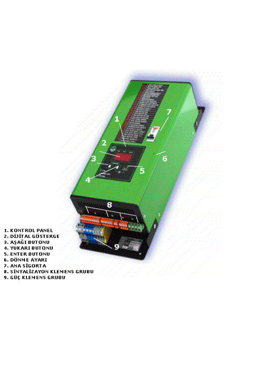

FİHRİST |
UYGULAMA PROJELERİ |
|
EK BİLGİ : CİHAZDA SERVİSE GİTMESİNİ GEREKTİREN HERHANGİ BİR ARIZA MEYDANA GELDİĞİNDE CİHAZ İLE BİRLİKTE VERİLEN KISA DEVRE KLEMENS KARTINA KTS ÜZERİNDEKİ İLGİLİ KLEMENSLERİ TAKARAK ASANSÖR KUMANDA SİSTEMİNİN CİHAZSIZ ÇALIŞMASI SAĞLANABİLİR.
DİKKAT ! KTS ÜZERİNDEKİ D KLEMENS SOKETİ KISA DEVRE KLEMENS KARTINA TAKILMAYACAK
KULLANIM KILAVUZUNU DİKKATLİCE OKUYUNUZ.
KIŞ AYLARINDA SOĞUK CİHAZIN, DAHA SICAK ORTAMLARDA MONTAJINDA CİHAZ ÜZERİNDE YOĞUNLAŞMA MEYDANA GELECEĞİNDEN CİHAZA GERİLİM VERİLMEDEN ÖNCE YOĞUNLAŞMANIN ORTADAN KALKMASI BEKLENİLMELİDİR. (YAKLAŞIK 12 SAAT).
UYGUN KABLO KULLANINIZ. KTS İLE PANO ARASINDA SAYFA 7’DE TAVSİYE EDİLEN KABLOLAR KULLANILMALIDIR.
KULLANILAN KABLOLAR TSE BELGELİ OLMALIDIR.
BAĞLANTILARI GERİLİMSİZ YAPINIZ. KTS İÇİNDE AKÜLERİ OLDUĞUNDAN BAĞLANTI ESNASINDA İÇİNDEKİ SİGORTA KAPALI VE PANO ELEKTRİĞİ KESİK OLMALIDIR
ISLAK VE RUTUBETLİ ORTAMLARDA ÇALIŞTIRMAYINIZ.
AKÜLER KISA DEVRE EDİLMEMELİDİR.
KULLANILMIŞ AKÜLER ATEŞE ATILMAMALIDIR.
KTS AKÜLÜ OLARAK 6 AYDAN FAZLA DEPOLANMAMALIDIR.
KALICI ELEKTRİK (RST) OLMAYAN YERLERDE (ŞANTİYE ORTAMI ) AYARLAR BİTTİKTEN SONRA OLASI HATALARA KARŞI D KLEMENSİ SÖKÜLMELİDİR. AKSİ TAKDİRDE FAZLAR ( RST ) İLE MP ( NÖTR ) BAĞLANTISI DEĞİŞİRSE İÇ SİGORTALAR ATARAK CİHAZ KORUMAYA GEÇECEK VE SERVİSE GÖNDERMENİZ GEREKECEKTİR.
AYRINTILI BİLGİ İÇİN TEKNİK SERVİSE BAŞVURUNUZ
|
 |
ÇALIŞMA ŞEKLİKATA ALMA SİSTEMİ (KTS OLARAK ANILACAKTIR) ASANSÖR SİSTEMİNDE ELEKTRİK KESİNTİSİ OLDUĞUNDA ASANSÖRDE MAHSUR KALMAMAK İÇİN TASARLANMIŞ BİR CİHAZDIR. ELEKTRİK KESİNTİSİNDE ASANSÖRÜ EN YAKIN KATA GÖTÜRÜR EĞER OTOMATİK KAPI VARSA ONU AÇAR VE DEVREDEN ÇIKAR. KTS’NİN DEVREYE GİRMESİ İÇİN FAZLARDAN HERHANGİ BİRİNİN KESİLMESİ , ASANSÖRÜN KATINDA OLMAMASI VE KABİN KAPISININ KAPALI OLMASI GEREKMEKTEDİR. ŞARTLAR GERÇEKLEŞTİĞİNDE PANONUN BESLEMESİ KTS TARAFINDAN KESİLİR (KURTARMA ESNASINDA ELEKTRİK GELİRSE KARŞILAŞMA OLMAMASI İÇİN) . KTS ÜZERİNDEN AYARLANAN SÜRE SONUNDA MEKANİK FRENİ AÇAR ÜÇ FAZLI GERİLİM ÜRETİLEREK MOTORA YOL VERİLİR VE BİR YÖNDE HARAKET DENENİR. EĞER BU YÖNDE DÖNEMİYOR İSE DURUP BEKLER SONRA DİĞER YÖN DENENİR. BU DENEMELERDE ASANSÖR MUTLAKA BİR YÖNDE HAREKET ETMELİDİR. EĞER HER İKİ DENEMELERDE ASANSÖR HAREKET ETMEZ İSE SİSTEMDE MEKANİK BİR SIKIŞIKLIK FREN BOBİNİNDE YADA MOTORDA ARIZA VARDIR. BU DURUMDA KTS PANONUN BESLEMESİNİ VERİR VE DEVREDEN ÇIKAR. EĞER HERHANGİ BİR YÖNDE HAREKET EDERKEN KAPI AÇILIRSA (EMNİYET YOK) HAREKET, ANINDA DURDURULUR VE KAPININ KAPANMASI BEKLENİR . KAPI 5 SANİYE İÇİNDE KAPATILMAZ İSE KTS DEVREDEN EMNİYET OLMAMASI NEDENİYLE KURTARMA YAPMADAN DEVREDEN ÇIKAR. KTS’NİN TÜM ÇIKIŞLARI KISA DEVRE KORUMALIDIR. MOTORDA VEYA FRENDE KISA DEVRE VARSA VEYA NOMİNAL AKIM AŞILDIĞINDA HATA ÇIKIŞI VERİR. KTS KENDİNİ KAPATIR. ELEKTRİKLER GELDİĞİNDE DISPLAYDE AYNI HATA KODU GÖZÜKÜR. HATA KODU SİLİNMEDİKÇE KTS ELEKTRİKLER KESİLSE BİLE HİZMET VERMEZ. HATA KODUNUN SİLİNMESİ İÇİN KTS ÜZERİNDEN YUKARI VE ENTER BUTONLARINA 3 SANİYE BOYUNCA BASILARAK KTS OFF KONUMUNA GETİRİLİP VE AYNI BUTONLARLA TEKRAR ON YAPILMASI GEREKİR.
|
MONTAJ ŞEKLİ
|
||||||||||||
KUMANDA PANOSU RUMUZLARI VE ANLAMI100: 24 V DC SİNYALİZASYON BESLEMESİ GİDİŞİ 101: 48 V DC EMNİYET DEVRESİ GİDİŞİ 120: STOP DÖNÜŞÜ (FİŞ GİDİŞİ) (48 V DC) 130: FİŞ DÖNÜŞÜ (KİLİT GİDİŞİ) (48 V DC) 140: KİLİT DÖNÜŞÜ 142: JF (KATTA) DÖNÜŞÜ1 143: JF1(KATTA) DÖNÜŞÜ (HİDROLİK SİSTEMLERDE SEVİYELEM İÇİN) 201...232: 1.KAT- 32. KAT AŞAĞI BUTON ÇAGRI GİRİŞİ (0 V DC) 301...332: 1.KAT- 32. KAT YUKARI BUTON ÇAGRI GİRİŞİ (0 V DC) 401...432: 1.KAT- 32. KAT KABİN BUTON ÇAGRI GİRİŞİ (0 V DC) 802: MİNUMUM YÜK GİRİŞİ (24V DC) 804: AŞIRI YÜK GİRİŞİ (24V DC) 805: TAM YÜK GİRİŞİ (24V DC) 810: LİRPOMP POZİTİF ÇIKIŞI (180V DC) 817: AŞAĞI MECBURİ DURDURUCU DÖNÜŞÜ (48V DC) 818: YUKARI MECBURİ DURDURUCU DÖNÜŞÜ (48V DC) 840: FREN BOBİNİ POZİTİF ÇIKIŞI (180V DC) 869: REVİZYON ANAHTARI DÖNÜŞÜ (48 V DC ) 1000: PANONUN NEGATİF GİRİŞİ (0V DC) 2000: FREN BOBİNİ NEGATİF ÇIKIŞI (0V DC) 2001: LİRPOMP NEGATİF ÇIKIŞI (0V DC) DTS : KAPI KAPAMA ANAHTARI DÖNÜŞÜ (24 V DC ) FM : İTFAİYECİ VEYA VATMAN GİRİŞİ (24V DC) M0 : GRAY KOD GİRİŞİ (24 V DC ) M1 : GRAY KOD GİRİŞİ (24 V DC ) M2 : GRAY KOD GİRİŞİ (24 V DC ) M3 : GRAY KOD GİRİŞİ (24 V DC ) M4 : GRAY KOD GİRİŞİ (24 V DC ) K16 : KAPI AÇMA LİMİT ANAHTARI DÖNÜŞÜ (48V DC) K19 : KAPI KAPAMA LİMİT ANAHTARI DÖNÜŞÜ (48V DC) K20 : FOTOSEL GİRİŞİ (24 V DC ) YG : YANGIN İHBAR GİRİŞİ (24V DC) A-B-C-D-E-F-G : DİGİTAL SİNYAL ÇIKIŞLARI (0V DC)
|
DEVREYE ALMAKTS’nin montaj şekline bakarak duvara veya panoya montajını gerçekleştiriniz Kuyuya giden kapı fişinin gidişini pano klemensinden (120) sökerek KTS üzerindeki a2 klemensine bağlayınız. (0,75 mm kablo ile) KTS üzerindeki a1 klemensini kumanda panosundaki stop dönüşüne (120) bağlayınız. (0,75 mm kablo ile) Fişin dönüşünü pano klemensinden (130) sökerek KTS üzerindeki a3 klemensine bağlayınız. (0,75 mm kablo ile) KTS üzerindeki a4 klemensini kumanda panosundaki fiş dönüşüne (130) bağlayınız. (0,75 mm kablo ile) Katta sinyalinin gidişini pano klemensinden (140 otomatik kapılı panolarda 102) sökerek KTS üzerindeki a6 klemensine bağlayınız. (0,75 mm kablo ile) KTS üzerindeki a5 klemensini kumanda panodaki katta sinyalinin gidişine (140 otomatik kapılı panolarda 102) bağlayınız. (0.75 mm kablo ile) Katta sinyalinin (jf-142 otomatik kapılı panolarda 651 ) dönüşünü pano klemensinden (142 otomatik kapılı panolarda 651) sökerek KTS üzerindeki a7 klemensine bağlayınız. (0,75 mm kablo ile) KTS üzerindeki a8 klemensini kumanda panodaki katta sinyalinin dönüşüne (142 otomatik kapılı panolarda 651) bağlayınız. (0.75 mm kablo ile) Trafo devresi bağlantısını projedeki gibi uygulayınız(0.75 mm KABLO İLE) Kumanda panosu üzerindeki revizyon botunu dönüşü(869) klemensi ile KTS üzerindeki b4 klemensini paralel olarak birbirine bağlayınız. (0.75 mm kablo ile) Kumanda panosu üzerindeki yukarı mecburi ksr2 dönüşü(818) klemensi ile KTS üzerindeki b5 klemensini paralel olarak birbirine bağlayınız. (0.75 mm kablo ile) Not:ksr1 ve ksr2 ortağını 130’dan (fiş dönüşü) alıyorsanız KTS montajından sonra bu kabloyu a3 klemensine bağlayınız. KTS üzerindeki a3 ve a4 klemensi elektrikler varken kısa devre olup aynı potansiyeldedir. KTS devreye girdiğinde KTS tarafından tesisata gerilim verildiğinde ksr’lerin kontrol edilebilmesi için böyle bir bağlantıya ihtiyaç vardır. Kumanda panosu üzerindeki aşağı mecburi ksr1 dönüşü(817) klemensi ile KTS üzerindeki b6 klemensini paralel olarak birbirine bağlayınız. (0.75 mm kablo ile). Ayrıca ksr1 ve ksr2 mecburi yavaşlatıcılarının ortağı pano üzerindeki bağlı olduğu yerden sökülerek KTS üzerindeki a3 klemensine bağlanmalıdır. Fren bobinine giden uçları (840-2000) pano üzerinden sökerek KTS üzerindeki c1 ve c4 klemenslerine , KTS üzerindeki c2 ve c3 klemenslerini kumanda panosundaki fren bobini (840-2000) çıkış klemenslerine bağlayınız. (0.75 mm kablo ile) Kumanda panosunun 380v ac girişilerini (rst) paralel olarak KTS üzerindeki d1,d2 ve d3 klemenslerine kumanda panosu notr bağlantısını KTS üzerindeki d4 klemensine bağlayınız. (0.75 mm kablo ile) Kumanda panosundaki asansör motoru yüksek hız klemenslerini (u1,v1,w1) KTS üzerindeki e3,e4 ve e5 klemenslerine paralel olarak bağlayınız. (4 mm kablo ile) Eğer varsa kumanda panosundaki 3 faz otomatik kapı klemenslerini (ku1,kv1,kw1) KTS üzerindeki e6,e7 ve e8 klemenslerine paralel olarak bağlayınız. (0.75 mm kablo ile) Kunanda panosu üzerindeki topraklama klemensinden KTS üzerindeki e9 klemensine paralel bağlantı yapınız. (0.75 mm kablo ile) Akü kutusundaki akülerin + ucunu (kırmızı) KTS üzerindeki e2 klemensine – ucunu (siyah) KTS üzerindeki e1 klemensine KTS ile birlikte verilen kablolar ile bağlayınız. Tüm bağlantıları tekrar kontrol ettikten sonra KTS üzerinde bulunan w otomatı kaldırınız. KTS göstergesinde onyazısı belirecektir. KTS üzerindeki w otomatın açık yada kapalı olması kumanda panosunun çalışması etkilemez. KTS’nin hizmet verebilmesi için cihazın on Asansörü KTS bağlantılarını yaptıktan sonra tekrar çalıştırarak herhangi bir aksaklık olup olmadığını kontrol ediniz. Herhangi bir aksaklık yoksa asansörü ara katlara aldıktan sonra seyir halinde iken kattan ayrıldıktan sonra gerilimi keserek KTS’nin devreye girmesini sağlayınız. KTS devreye girdiğinde denediği ilk yönü tespit ediniz. KTS’nin denediği ilk yön eğer yukarı ise 14. Parametreyi “1” yapmayı unutmayınız. Değilse 14. Parametrede herhangi bir değişiklik yapmanıza gerek yoktur. KTS’nin ilk denediği yönde dönmeyi başaramaması halinde diğer dönü deneyebilmesi için KTS yerleşim planında belirtilen 6 nolu trimpottan dönemediğinin KTS sistemine bildirilmesi gerekmektedir. Bunu sağlamak için KTS devreye girdiğinde motor volanından tutularak motorun dönmesi engellenerek trimpot saat yönünde KTS göstergesinde Er7 hata kodu belirene kadar küçük adımlarla çevrilir. Göstergede hata kodu gözüktüğünde çeyrek tur saat yönünün tersinde çevrilerek ayar tamamlanır. Not>: Eğer KTS devreye girdiğinde kalkış torkunu tamamladıktan sonra motor döndüğü halde Er7 hata kodunu vererek diğer yöne hareket ederse bunun anlamı dönemiyor ayarının doğru yapılmadığıdır. Motor döndüğü halde Er7 hata kodunu veriyor ise trimpot saat yönünün ters istikametinde küçük adımlarla çevrilerek ayarlanır.(dönemiyor hassasiyeti azaltılır.) Asansörün durumuna göre gerekli parametreleri programlama moduna geçerek ayarlayınız.
|
PROGRAMLAMA ŞEKLİPROGRAMLAMA MODUNA GEÇMEProgramlama moduna geçmek veya programladıktan sonra çıkmak için kontrol paneli üzerindeki aşağı ve yukarı butonlarına birlikte kesintisiz 3 saniye basılı tutmanız yeterlidir. Göstergede gözüken karakterler üç hane ise aşamasını , iki hane ise o aşamanın içerdiği bilgiyi ifade etmektedir. Parametreleri değiştirebilmek için C00 ve C01 güvenlik kodlarının sırasıyla doğru girilmesi gerekir. Aksi taktirde parametreleri değiştiremezsiniz. Sisteme yetkisiz kişilerin ulaşıp parametreler ile oynamaması için iki kademeli güvenlik şifresi uygulanmıştır. GÜVENLİK KODUNUN GİRİLMESİGöstergede C00 görünürken enter butonuna bir kez dokunup bırakınız. Displayde 00 değerini göreceksiniz. İlk defa devreye alıyorsanız güvenlik kodu 00 değeridir ve enter butonuna bir kez daha dokunup bırakarak onaylayabirisiniz. Ama daha önce değiştirdiyseniz yukarı ve aşağı butonları kullanarak bildiğiniz ilk kodu girmelisiniz. Aynı işlemi C01 kodu için doğru bir şekilde gir diğinizde parametrelere ulaşabilirsiniz. GÜVENLİK KODUNUN DEĞİŞTİRİLMESİParametrelere ulaştıktan sonra P00 sizin birinci güvenlik numaranızı P01 ikinci güvenlik numaranızı ifade etmektedir. P00 geğiştirmek için göstergede P00 görünürken enter butonuna dokunup bırakınız . Programlanmış eski değer göstergede gözükecektir. Yukarı ve aşağı butonlarını kullanarak istediğiniz değere geldikten sonra enter butonuna dokunup bırakarak onaylayınız. Aynı işlemi eğer istiyorsanız P01 için tekrarlayabilirsiniz. Programlama modundan çıktığınıda değiştirdiğiniz tüm parametreler hafıza birimine kaydedilerek saklanır.
ÖRNEK PARAMETRE DEĞİŞTİRME : SEYİR ZAMANIProgramlama moduna girip güvenlik kodlarını doğru bir şekilde girdikten sonra seyir zamanını değiştirmek için yukarı butonunu kullanarak P08 ‘in göstergede görünmesini sağlayınız. Enter butonuna dokunup bırakınız. Progamlama displayinde eğer daha önce değiştirilmedi ise 60 gözükecektir. Yukarı ve aşağı butonlarını kullanarak istediğiniz değere geldikten sonra enter butonuna dokunup bırakarak onaylayınız. Programlama modundan çıkana kadar yeni ayarladığınız değerler aktif olmayacaktır.
|
PROGRAMLANAN PARAMETRELER
P00 : Birinci güvenli kodu olup fabrikasyon değeri 00’ dır.
P01 : İkinci güvenlik kodu olup fabrikasyon değeri 00’dır
P02 : Asansör motorunun kalkışı tamamladıktan sonra çalışacağı hızı ve dönme torkunu belirler . Arttırıldıkça hız düşer güç artar.
P03 : Otomatik kapı motorunun kalkışı tamamladıktan sonra çalışacağı hızı ve dönme torkunu belirler . Arttırıldıkça hız düşer güç artar.
P04 : Asansör motorunun ilk kalkış hızını ve torkunu belirler. Arttırıldıkça hız azalır güç ve darbe yükselir.
P05 : Otomatik kapı motorunun ilk kalkış hızını ve torkunu belirler. Arttırıldıkça hız azalır güç ve darbe yükselir.
P06 : Kapı açma süresini belirler. Adım değeri 0.45 saniye olup süre adım değerinin ayarlanan sayı ile çarpılarak bulunur. Adım değeri 0.45 saniye olup fabrikasyon değeri 15 saniye maksimum değer yaklaşık 45 saniyedir.
P07 : Elektrik kesildikten sonra kts’nin devreye girmek için beklediği süreyi belirler. Jeneratörlü asansörlerde jeneratörün devreye girmesi için beklenen süre aşıldığında kts’nin devreye girmesi için tasarlanmıştır. Aynı zamanda elektrik kesildiğinde asansör hemen duramayacağından (kayacağından) bir süre beklemek gerekmektedir. Bu gecikme fabrikasyon değer ile sağlanmıştır. Adım değeri 1 saniye olup fabrikasyon değeri 1 saniye maksimum değer yaklaşık 99 saniyedir.
P08 : KTS devreye girdiğinde kata ulaşana kadar geçecek zamanı belirler. Katlar arası mesafeye göre ayarlanmalıdır. Adım değeri 2 saniye olup fabrikasyon değeri 120 saniye maksimum değer yaklaşık 198 saniyedir. P09 : Katta sinyali geldikten sonra durma zamanını belirler.kts devreye girdiğinde kata gelene kadar çalışır. Fakat kts çalışma hızı motorun normal hızından daha düşük olduğu için katta manyetiğini görüp durduğunda kata ulaşamamış olabilir. Katta sinyali geldikten sonra zamanı ayarlayarak tam kat seviyesinde durdurulabilir. Adım değeri 0.35 saniye olup fabrikasyon değeri 3 saniye maksimum değer yaklaşık 35 saniyedir.
P10 : Otomatik kapı motoru 220v ac ile çalışıyorsa (kramer kapı gibi) bu parametre 1 yapılmalıdır. Dc (sematic gibi) ,380v ac (selkom gibi) veya asansörde otomatik kapı yoksa 0 olmalıdır.
P11 : Katta manyetiğinin asansör kata geldiğindeki durumu kumanda sistemlerine göre değişkenlik gösteridiğinden katta manyetiğinin durumunun kts’ye bildirilmesi için kullanılır. Böylelikle ekstra manyetik ve mıknatıs dizilmez.
P12 : Otomatik kapı varlığı belirtilir. Otomatik kapı var ise 1 yok ise 0 olmalıdır.
P13 : Otomatik kapının cinsi belirlenir. Eğer otomatik kapı 380v ac ise 1 değilse 0 olmalıdır.
P14 : KTS bağlandığında motorun ilk deneme yönünün girilmesi içindir. İlk deneme yönü yukarı ise 1 aşağı ise 0 olmalıdır. Doğru ayarlanmadığı taktirde aşağı ve yukarı mecburilerde kts ters yöne hareket etmeye çalışacaktır.
P15 : Kapı motoru ilk deneme yönünü belirler . Fabrikasyon değeri 0 olup bağlantıyı yaptıktan sonra ilk devreye verildiğinde kapı kapamaya çalışıyorsa 1 yapılır.
P16 : Asansör mecburi durduruculara girdiğinde mecburi durdurucu manyetiği kapalı ise 1 açık ise 0 olmalıdır.
P17 : Fabrikasyon değerlerin geri yüklenmesine yarar. Eğer 1 yapılıp enter butonuna basılırsa fabrikasyon değerler geri yüklenir.
|
HATA KODLARI VE İZAHIAŞAĞIDAKİ RUMUZLAR PROGRAMLAMA GÖSTERGESİNDE GÖZÜKÜR.
Er1 : Mecburi durdurucu seçimi hatalı veya her iki mecburi durdurucu manyetiğinden (ksr1 ve ksr2 aynı anda her iki açık veya kapalı) mecburi durdurucularında olduğunu gösteren sinyal geliyor. Er2 : Asansör motoru fazla akım çekiyor veya motorda kısa devre var. Bu durumda kts elektrikler geldiğinde normale dönmez. Er3 : Fren bobini aşırı akım çekiyor veya kısa devre var. Servise haber verin. Bu durumda kts elektrikler geldiğinde normale dönmez. Er4 : Kapı motoru aşırı akım çekiyor veya kısa devre var. Servise haber verin. Bu durumda kts elektrikler geldiğinde normale dönmez. Er5 : Kapı açık olduğunu gösterir.kapı kapatıldığında hareketine devam eder. Er6 : Programlanan seyir zamanının dolduğu halde kata ulaşamadığını gösterir. Sistemin kontrol edilmesi gerekir. Eğer sistemde herhangi bir anormallik olmadığı halde bu hata kodu görülüyorsa programlama moduna geçilerek seyir zamanının arttırılması gerekir. Er7 : Dönemiyor sinyali algılandı. Diger yön denenecek. İkinci deneme ise tork arttırılacak. Er8 : Her iki yöndede hareket edemedi. Aşırı veya dengesiz yük var. Lo : Akü çok zayıf. Şarj gerekli. onH : Asansör revizyona alındı. KTS FONKSiYON KODLARIFo0 : GERİLİM KESİLDİ. Fo1 : KURTARMA BAŞLADI. Fo2 : KABİN KATA GETİRİLDİ. Fo3 : OTOMATİK KAPI AÇILMAYA BAŞLANDI . Fo4 : OTOMATİK KAPI AÇILMASI TAMAMLANDI
|
TEKNİK VERİLER
|